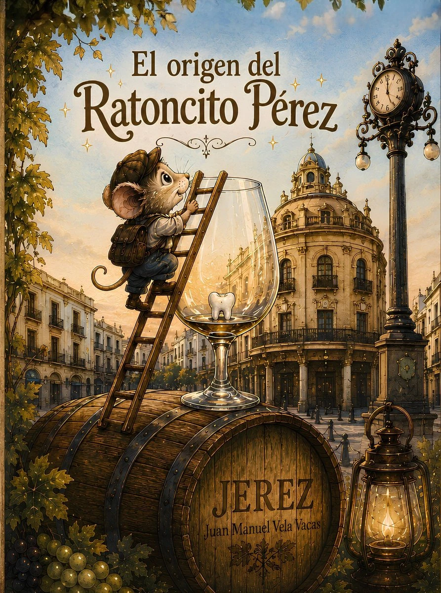
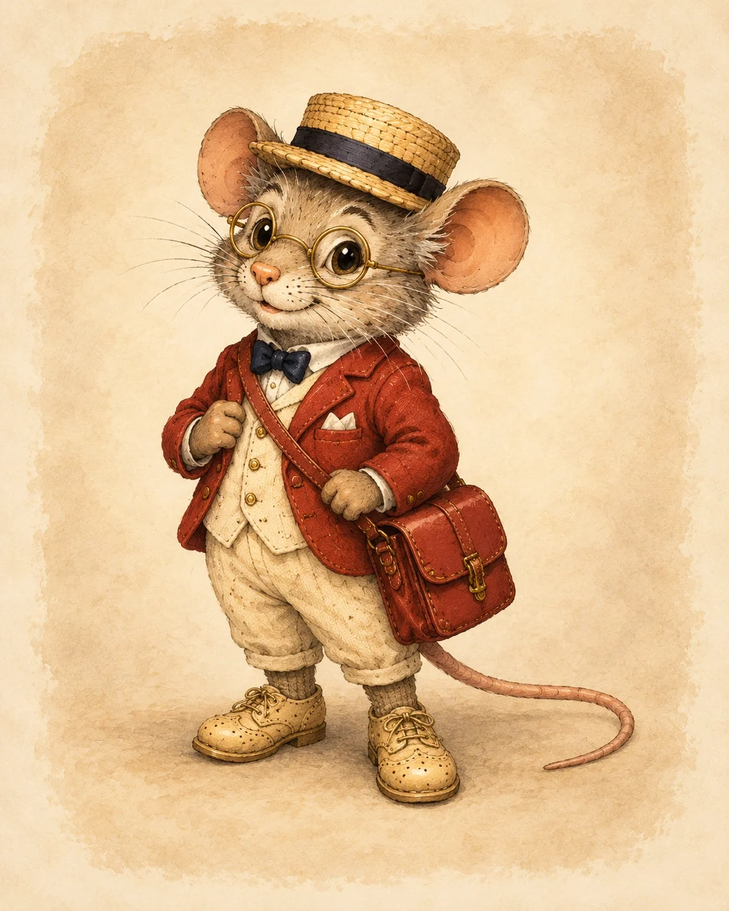
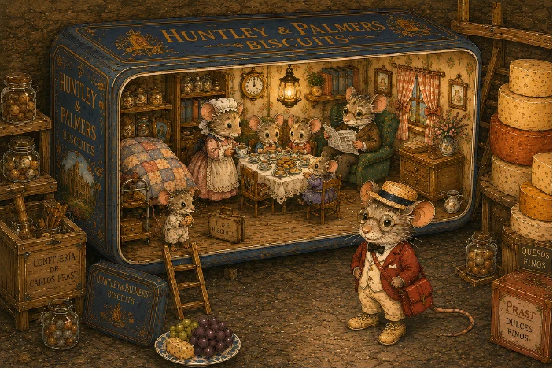
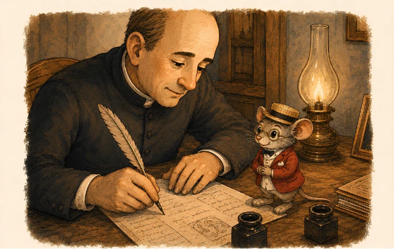
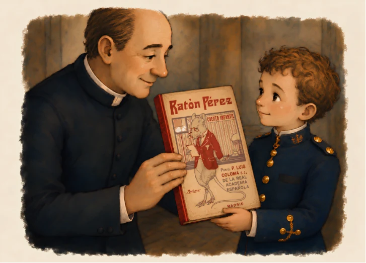
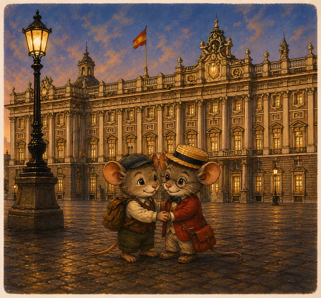

El origen del
Ratoncito Pérez
Hace más de un siglo, Luis Coloma llevó al Ratón Pérez a una de sus aventuras más famosas: la historia del pequeño rey Bubi. Aquí puedes descubrir cómo era Pérez, dónde vivía, la magia de aquella aventura y cómo su historia se une con Jerez y con una extraordinaria familia de ratones bodegueros.
DESCUBRIR A PÉREZ →Una historia para descubrir sin perder la magia
El Ratón Pérez lleva generaciones visitando los hogares cuando cae un diente. Luis Coloma escribió una de sus aventuras más famosas para un niño llamado Bubi, el pequeño Alfonso XIII. En El origen del Ratoncito Pérez, la historia comienza en Jerez, donde Coloma conoce a una familia Pérez muy especial.
Al final hay una sección desplegable +12 con curiosidades para mayores y adultos. Los más pequeños pueden quedarse con la aventura y la magia de Pérez.
Esta página acompaña a El origen del Ratoncito Pérez. Aquí descubrirás a la familia Pérez, su relación con Jerez y la aventura de Luis Coloma y Bubi.
¿Cómo era el Ratón Pérez?
Luis Coloma fue el primero en dejar por escrito una descripción detallada y reconocible de Pérez.

Coloma lo presenta como «un ratón muy pequeño, con sombrero de paja, lentes de oro, zapatos de lienzo crudo y una cartera roja».
Después añade que era un «ratón muy de mundo»: un pequeño caballero acostumbrado a las alfombras, a las casas elegantes y a tratar con todo tipo de personas.
Su sombrero, sus lentes y su cartera roja hacen que sea fácil reconocerlo incluso antes de que empiece la aventura.
¿Dónde vivía el Ratón Pérez?
La familia Pérez tiene un hogar diminuto en Madrid, muy cerca de la calle del Arenal.
Arenal 8, la confitería de Carlos Prast
La casa de la familia Pérez está en la calle del Arenal, número 8, junto a la confitería de Carlos Prast y frente a una gran pila de quesos de Gruyère.
Dentro de una gran caja de galletas de Huntley vive toda la familia: la señora Pérez, Adelaida, Elvira, Adolfo y, por supuesto, nuestro elegante ratoncito.
Tienen té, música, buenos modales y una casa llena de pequeños detalles a escala de ratón.

Sí: Bubi se convierte en ratón
La historia de Coloma está llena de magia y aventuras mucho más grandes que un simple intercambio de un diente.
Cuando Bubi pide acompañar a Pérez ocurre un «prodigio maravilloso»: tras un estornudo provocado por Pérez, el niño rey queda convertido en un pequeño ratón.
Así puede recorrer las cañerías de Madrid, visitar la casa de los Pérez y acompañarlo durante una noche que cambiará su manera de mirar el mundo.
Del escritor de Jerez al niño rey
Luis Coloma escribió la aventura de Pérez para el pequeño Alfonso XIII, Bubi.

Un escritor de Jerez y una familia muy especial
Coloma nació en Jerez de la Frontera. En nuestra historia, años antes de escribir para Bubi, conoce allí a una extraordinaria familia de ratones bodegueros.
Ese encuentro une el mundo de las bodegas jerezanas con la aventura que más tarde vivirá el pequeño rey junto a Pérez.
La aventura llega al Palacio Real
En la historia de Coloma, Bubi acompaña a Pérez en una noche extraordinaria y descubre su mundo desde el tamaño de un ratón.

El encuentro de Coloma con la familia Pérez
En El origen del Ratoncito Pérez, Luis Coloma conoce en Jerez a una extraordinaria familia Pérez y su historia queda unida para siempre a la de estos ratoncitos bodegueros.
Los Pérez son mágicos: existen puertas imposibles, viajes increíbles y una gran familia que atraviesa generaciones.
Años después, cuando Coloma escribe su cuento para Bubi, aquel encuentro vuelve a su memoria y la historia de Pérez continúa de una forma muy especial.
Los Pérez forman una gran familia repartida por muchos lugares. Cada uno puede tener su aspecto, su carácter y sus propias costumbres.
Con sombrero de paja, lentes de oro, zapatos claros y su cartera roja, acompaña a Bubi en una noche inolvidable.

¿Qué explica El origen del Ratoncito Pérez?
El cuento responde a muchas de esas preguntas que aparecen cuando un niño empieza a pensar en cómo funciona la magia de Pérez.
Preguntas sobre el Ratón Pérez
Curiosidades sobre Pérez, su casa, su aspecto y la aventura de Bubi.
¿Cómo era el Ratón Pérez descrito por Coloma?
Muy pequeño, elegante y «muy de mundo», con sombrero de paja, lentes de oro, zapatos de lienzo crudo y una cartera roja terciada a la espalda.
¿Dónde estaba la casa de la familia Pérez?
En Madrid, cerca de la calle del Arenal, dentro de una gran caja de galletas donde vive toda la familia.
¿Bubi llegó a convertirse en ratón?
Sí. Gracias a la magia de Pérez, Bubi puede acompañarlo convertido en un pequeño ratón.
¿Qué relación tiene Pérez con Jerez?
Luis Coloma nació en Jerez y, en nuestro cuento, conoce allí a una extraordinaria familia de ratones bodegueros.
¿Por qué pueden aparecer distintos Pérez?
Porque Pérez es una familia. Hay distintos miembros a lo largo de las generaciones y cada uno puede tener su carácter y sus propias costumbres.
+12 Investigación histórica y literaria Documentos antiguos, primeras ediciones, curiosidades históricas y notas del autor para lectores mayores.
Historia, recreación y cuento: tres niveles distintos
Esta parte está pensada para adultos y lectores mayores. Aquí sí explicamos qué procede de fuentes históricas, qué completamos visualmente y qué pertenece a El origen del Ratoncito Pérez.
No buscamos fingir una fotografía histórica. Queremos hacer visible, de forma honesta, cómo interpretamos hoy los detalles que Coloma dejó escritos.
Algunas imágenes son escenas simbólicas. Por ejemplo, mostrar a Coloma escribiendo junto a nuestra representación de Pérez ayuda a contar visualmente la relación entre el autor y el personaje, pero no pretende presentar esa escena como un encuentro histórico documentado.
Tres niveles para no confundir historia y cuento
Lo que aparece en el texto de Coloma, el manuscrito o fuentes históricas fiables.
Cómo completamos visualmente aquello que Coloma no detalló: ropa, espacios, gestos o composición de determinadas escenas.
La historia creada por Juan Manuel Vela Vacas para conectar Jerez, Luis Coloma, la tradición bodeguera y la familia Pérez.
Esta separación está aquí, en la zona +12, precisamente para que la lectura familiar pueda conservar intacta la magia de Pérez.
¿Y si Coloma hubiera conocido a los Pérez en Jerez?
Esta es la pregunta creativa que da origen al cuento de Juan Manuel Vela Vacas.
El punto de partida
Luis Coloma nació en Jerez y fue el primero en dejar una descripción literaria detallada y reconocible de Pérez. El cuento toma ese vínculo real con la ciudad y plantea una posibilidad fantástica: que, siendo joven, Coloma hubiera conocido allí a una familia de ratones bodegueros.
Dentro de El origen del Ratoncito Pérez, ese encuentro se convierte años después en la conexión entre Coloma, Bubi y la familia Pérez.
Dos Pérez que no necesitan ser idénticos
🐭 El Pérez de nuestra historia
Pertenece a una gran familia mágica, con puertas, viajes imposibles, distintas generaciones y costumbres propias.
🎩 El Pérez descrito por Coloma
Es el elegante ratón de sombrero de paja, lentes de oro, zapatos de lienzo crudo y cartera roja que acompaña a Bubi en su aventura.
La página los conecta visualmente sin afirmar que una ilustración moderna sea una reconstrucción histórica exacta.
¿Qué sabemos de Pérez en los libros?
Aquí entramos en la parte más literaria: antecedentes del nombre, manuscrito, fechas y primeras ediciones. En esta parte reunimos datos literarios e históricos para adultos y lectores curiosos, sin cambiar la magia con la que los niños viven la tradición.
El nombre ya circulaba antes
La literatura española ofrece rastros anteriores. Benito Pérez Galdós utiliza varias veces la expresión «ratoncito Pérez» en La de Bringas, escrita en 1884, como apodo de Francisco Bringas. Estudios de literatura popular recogidos por la Biblioteca Virtual Miguel de Cervantes también señalan menciones de Ratón Pérez en textos y tradiciones asociados a Fernán Caballero.
Por eso es más prudente decir que Coloma recogió un nombre y una tradición preexistentes y les dio una nueva vida narrativa.
Leer La de Bringas en Cervantes VirtualLa aportación decisiva de Coloma
El manuscrito autógrafo de Ratón Pérez, conservado por la Real Biblioteca, está datado aproximadamente hacia 1894 y contiene una dedicatoria a Alfonso XIII. La Real Biblioteca explica que Coloma escribió la historia para el niño rey, a quien su madre llamaba cariñosamente Bubi.
Coloma convirtió así a Pérez en un personaje con casa, familia, personalidad, aventuras y una función moral dentro de un relato concebido para un niño concreto.
Ver la ficha del manuscrito en la Real BibliotecaDe Jerez al cuento del rey Bubi
Cuatro fechas ayudan a entender la historia sin mezclar la creación del cuento con sus ediciones posteriores.
Luis Coloma nace en Jerez de la Frontera el 9 de enero.
La Real Biblioteca data aproximadamente en estos años el manuscrito autógrafo dedicado a Alfonso XIII.
Primera edición de Ratón Pérez dentro de Nuevas Lecturas.
Primera edición como obra independiente, publicada por Razón y Fe e ilustrada por Mariano Pedrero.
La fecha exacta de composición ha sido objeto de estudio; por eso aquí usamos la datación aproximada de la Real Biblioteca en lugar de presentar un año exacto como indiscutible.
Por qué quise contar así la historia de Pérez
Cuando empecé El origen del Ratoncito Pérez quería unir de una forma natural Jerez, su tradición bodeguera y Luis Coloma, pero también quería dar una explicación sencilla a muchas de las diferencias que existen entre las costumbres de unas familias y otras.
Coloma nació en Jerez y fue el primero en dejar por escrito una descripción detallada y reconocible de Pérez. Esa conexión me permitió hacer que, en mi cuento, el joven Coloma conociera a una familia de ratones bodegueros y que Jerez se convirtiera en una parte importante de la historia.
La otra idea fundamental fue esta: Pérez no es un único ratón; Pérez es una familia. Hay muchos Pérez repartidos por el mundo y cada uno puede tener sus propias costumbres. Eso explica por qué en algunas casas deja monedas, mientras que en otras puede dejar chuches, pequeños regalos u otros obsequios.
No quería que la historia dijera que solo existe una forma correcta de vivir la tradición. Una moneda, una chuche o un pequeño regalo pueden formar parte de la misma magia porque cada miembro de la familia Pérez trabaja a su manera.
En el cuento propongo dejar el diente en una copa, vaso o pequeño recipiente junto a la cama. Así Pérez puede localizarlo con facilidad y no tiene que buscar debajo de la almohada ni acercarse tanto al niño dormido, reduciendo el riesgo de despertarlo.
La intención no es sustituir las costumbres de cada casa, sino darles un lugar dentro de una misma historia. Si cada Pérez pertenece a una gran familia y cada miembro tiene su manera de trabajar, todas esas pequeñas diferencias pueden convivir sin dejar de formar parte de la tradición.
Esta explicación se queda en la zona +12 porque habla de las decisiones del autor y de cómo se construyó el cuento. La parte familiar mantiene la historia y la magia de Pérez tal como la viven los niños.
¿De dónde sale la información histórica?
Para separar la documentación de la ficción hemos priorizado el manuscrito, la edición histórica y recursos bibliográficos institucionales.
Consultar manuscrito
Consultar cronología
Abrir facsímil
Leer texto
Consultar la obra
¿Carlos Prast o Carlos Prats?
El propietario real de la confitería era Carlos Prast. Sin embargo, en Ratón Pérez Luis Coloma escribió el apellido como Prats. Por eso pueden encontrarse las dos formas al investigar la historia.
En nuestra ilustración y en nuestro cuento conservamos Prast, el apellido verdadero del confitero, ya que se trata de una reconstrucción dentro de nuestro propio universo y no de una reproducción literal del texto de Coloma.
El origen del Ratoncito Pérez
Descubre a la familia Pérez, sus puertas mágicas, sus viajes y su conexión con Jerez y Luis Coloma.